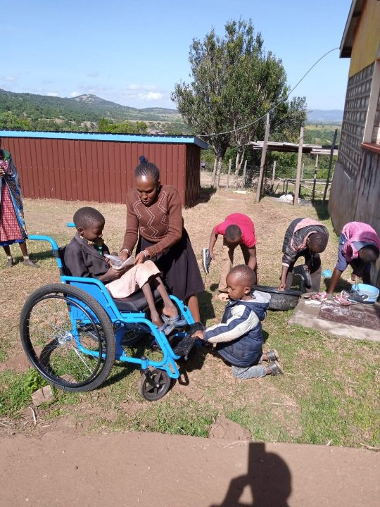

About Namelok
Standing up for the children others hid away.
Namelok Naretoi Home is a community based organisation in Narok, Kenya. We began by finding children with disabilities who were hidden away in Maasai communities, and making sure they received medical care, schooling and a safe place to live.
Today we also protect girls rescued from FGM and early marriage, care for children from vulnerable homes, and run awareness programmes in schools and communities.